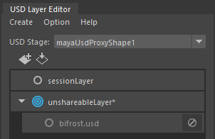

Bifrost-USD 和适用于 Maya 的 USD 使用匿名（基于内存）层连接。默认情况下，适用于 Maya 的 USD 使用由 Bifrost-USD 输出的根层副本。您可以强制 Bifrost-USD 和 适用于 Maya 的 USD 使用相同的层来节省内存，但这样做会产生重要的后果。
将后台文件作为新端口连接到 Bifrost 图表的 output 节点时，会自动在场景中创建 Maya USD 代理并将其连接到图表输出。默认情况下，Bifrost 后台文件作为代理的不可共享层的子层包含其中。

不可共享层用于存储在 Maya 中所做的更改。例如，如果从 Maya 视口的 Bifrost 后台文件移动对象，或者选择变量，那么这些更改将作为覆盖存储在不可共享层中。
这种机制是必需的，这样在 May a中所做的更改才能在您处理图表时持久存在。这是因为每次对图表重新求值时，它都会在内存中生成一个新的后台文件。如果您在 Maya 中所做的更改在共享层中，它们将会丢失。
但是，Maya 的 Bifrost 后台文件副本需要额外的内存。如果您不需要在 Maya 和 Bifrost 之间来回工作，可以强制它们共享同一层以节省内存。例如，如果您使用 Bifrost-USD 创建要从 USD 文件直接加载到其他场景的程序内容，则会出现这种情况。
强制适用于 Maya 的 USD 和 Bifrost-USD 在内存中使用同一层：
mayaUsdProxyShape 选项卡上，启用“后台文件”(Stage)属性组中的“可共享”(Shareable)。Maya 的 USD 层编辑器显示 Bifrost 中的层现在已共享：